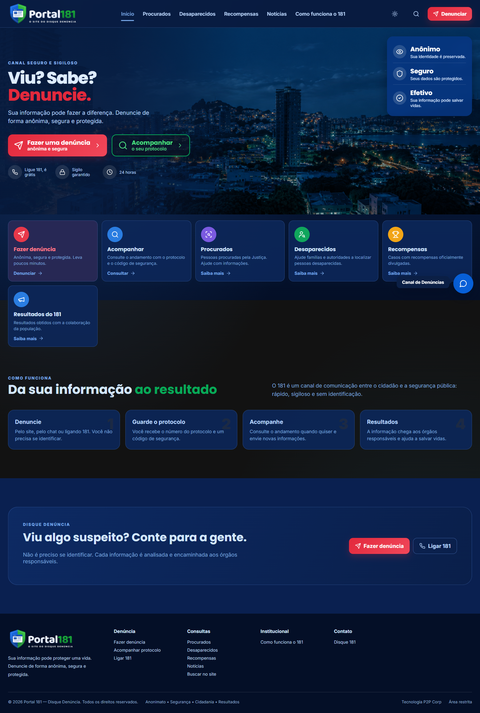
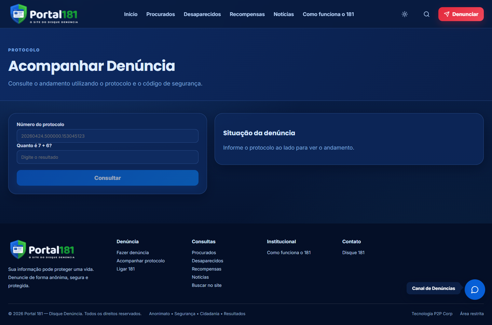
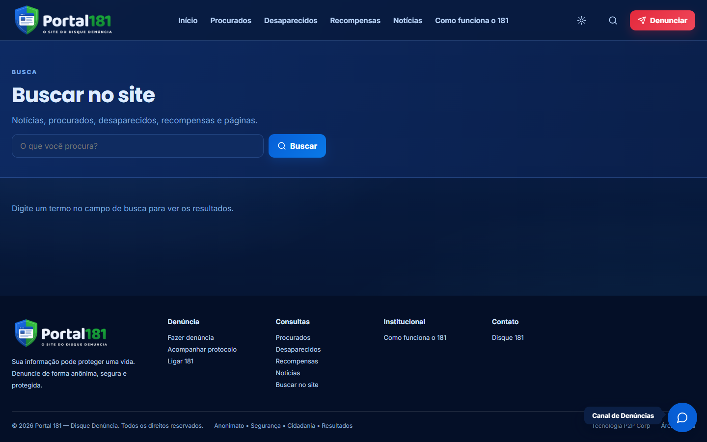
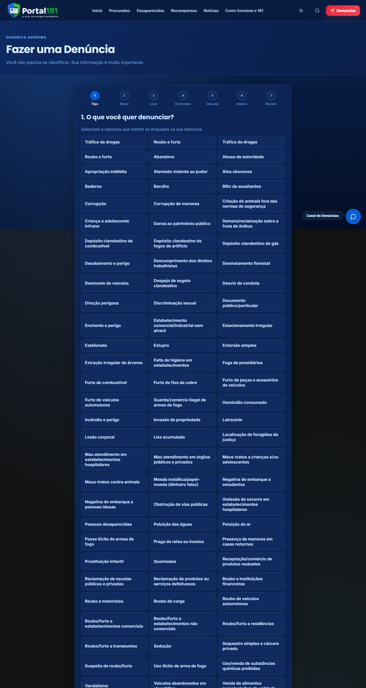
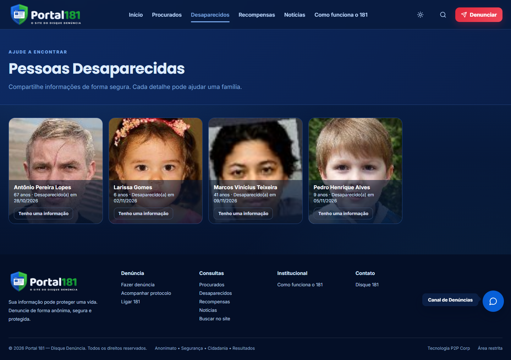
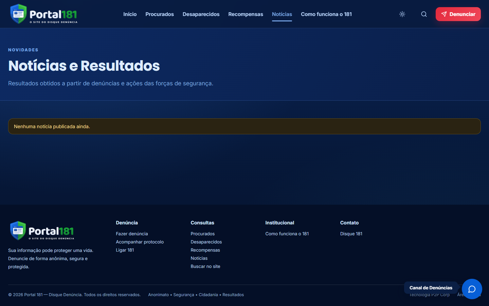
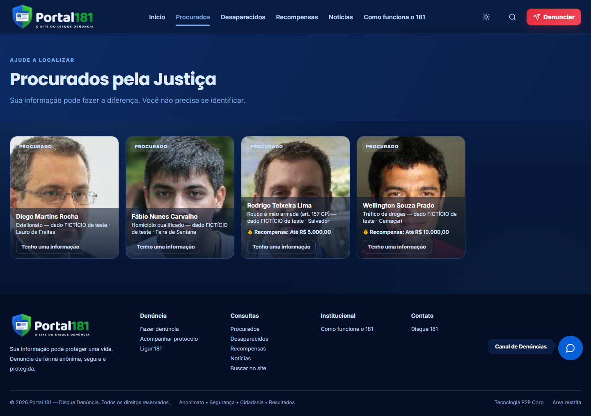
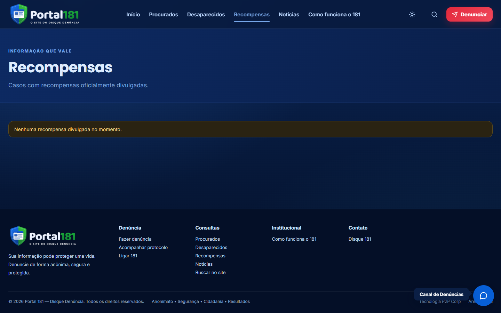
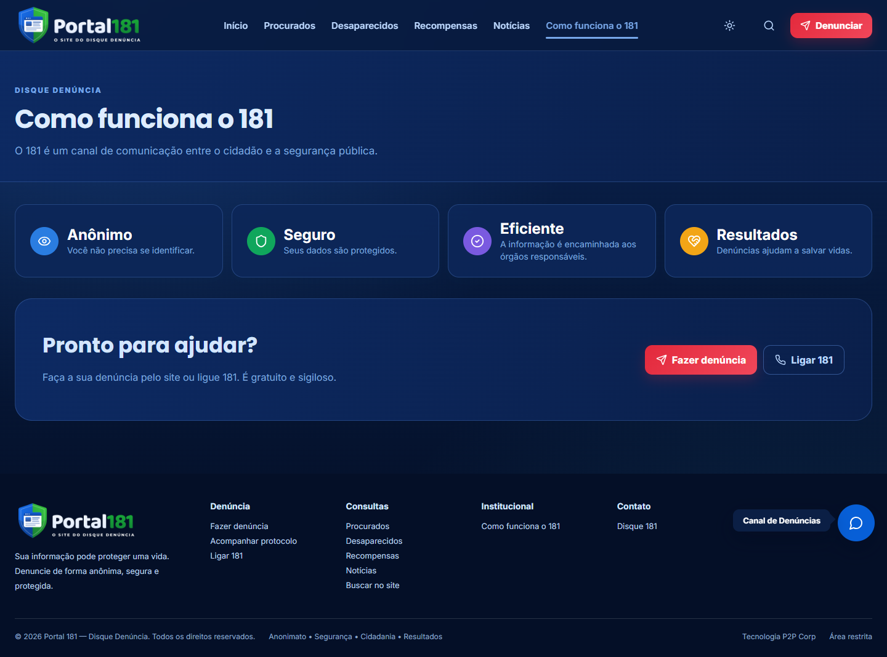
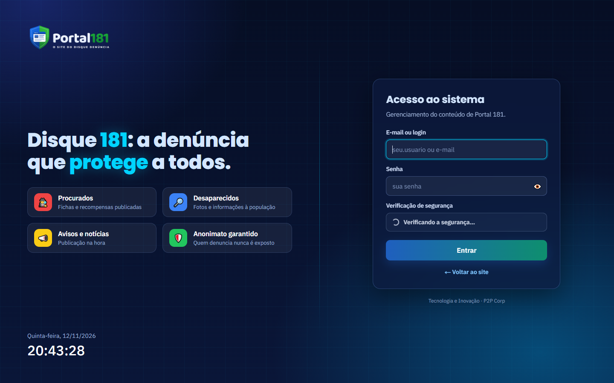

As páginas do site Portal 181 e a área administrativa — o que cada uma mostra e para que serve.
Produto
Portal 181
Público
Equipe que publica e administra o site
Versão
Novembro de 2026
P2P Corp — Tecnologia e Inovação
Sumário
Página inicial
Acompanhar Denúncia
Busca
Fazer uma Denúncia
Pessoas Desaparecidas
Notícias e Resultados
Procurados pela Justiça
Recompensas
Como funciona o 181
Área administrativa (/admin)
1. Página inicial
Endereço: /. Sua informação pode fazer a diferença. Denuncie de forma anônima, segura e protegida.

Página inicial
2. Acompanhar Denúncia
Endereço: /acompanhar. Consulte o andamento utilizando o protocolo e o código de segurança.

Acompanhar Denúncia
3. Busca
Endereço: /busca. Notícias, procurados, desaparecidos, recompensas e páginas.

Busca
4. Fazer uma Denúncia
Endereço: /denuncie. Você não precisa se identificar. Sua informação é muito importante.

Fazer uma Denúncia
5. Pessoas Desaparecidas
Endereço: /desaparecidos. Compartilhe informações de forma segura. Cada detalhe pode ajudar uma família.

Pessoas Desaparecidas
6. Notícias e Resultados
Endereço: /noticias. Resultados obtidos a partir de denúncias e ações das forças de segurança.

Notícias e Resultados
7. Procurados pela Justiça
Endereço: /procurados. Sua informação pode fazer a diferença. Você não precisa se identificar.

Procurados pela Justiça
8. Recompensas
Endereço: /recompensas. Sua informação pode proteger uma vida. Denuncie de forma anônima, segura e protegida.

Recompensas
9. Como funciona o 181
Endereço: /sobre. O 181 é um canal de comunicação entre o cidadão e a segurança pública.

Como funciona o 181
10. Área administrativa (/admin)
Endereço: /admin. Entrada da equipe com usuário e senha (os mesmos usuários do banco do site, com verificação de segurança automática): ali se editam páginas, avisos, perguntas frequentes, configurações e se respondem os contatos. O site também pode ser gerenciado pelo AdmSite360.

Área administrativa (/admin)
Portal 181 — Site Portal 181 · P2P Corp — Tecnologia e Inovação. As telas usam dados fictícios de demonstração.
 P2P Corp — Tecnologia e Inovação
P2P Corp — Tecnologia e Inovação